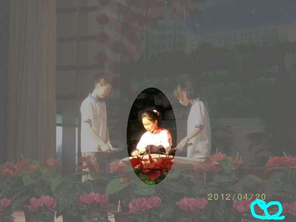

2011-2012 第二学期八年级图像处理教学设计
作者：TeliuTe 来源：基础教程网
十七、学会改变亮度和对比度 返回目录 下一课
（一）教学设计
1、学习目标：学会改变亮度和对比度
2、注意事项：工具使用选择好
3、教学过程：
1）教师准备学案和板书；
2）学生整队进入，开机抄黑板上笔记；
3）教师讲解板书演示操作；
4）学生打指法、日志、完成操作；
5）教师打勾记录学生指法成绩，检查日志和操作；
注：学生抄完笔记就开始打指法、日志，老师讲完后再继续完成；
（二）板书设计(学生笔记)
第17课 学会改变亮度和对比度
1.下载打开一幅图片（暗一些）
2.用框选工具，选定区域（反转）
3.点“颜色，亮度-对比度”
4.增强或者减弱，确定，签名
5.保存两次，上传
操作图示：

（三）课后记
早上那两个班的老师去拍录像，让帮着看下
把上传和保存为JPEG讲一下，结果学生把其他班的拿过来
--
提前已经想好做什么，先处理相片到课间才把板书写上
大致操作一下还可以，没什么难度但是要绕弯才行
--
有个反转的操作，这样是把背景沉下去，从而凸现主题
然后要去掉选框才能签名，学生还是着急耐心讲解
--
做的很快，只是效果一般化
把操作掌握了，但是很少构思美术设计
--
选择菜单用的比较多，还有文件是下载还是直接复制，
直接复制图像的多些，直接用另存两次减少一些复杂性
--
看日志评论才发现上回点名批评的那个班还不愿意较上劲了
对男生直接了当不留什么情面，女生稍稍缓和一些
--
返回目录 下一课
本教程由86团学校TeliuTe制作|著作权所有
基础教程网：http://teliute.org/
美丽的校园……
转载和引用本站内容，请保留作者和本站链接。